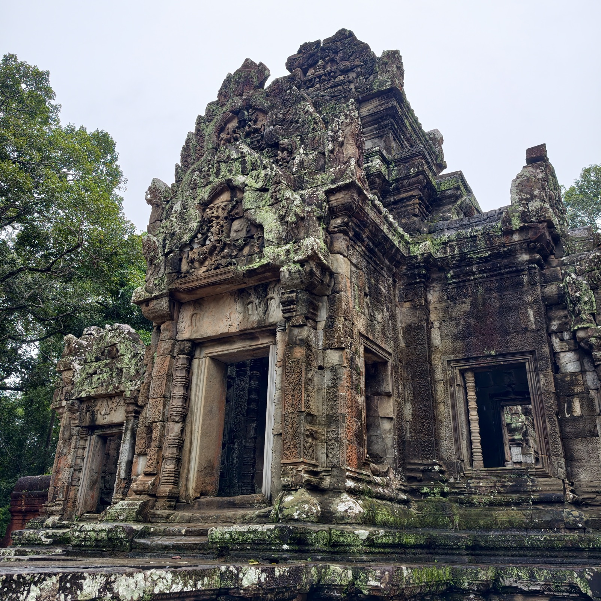
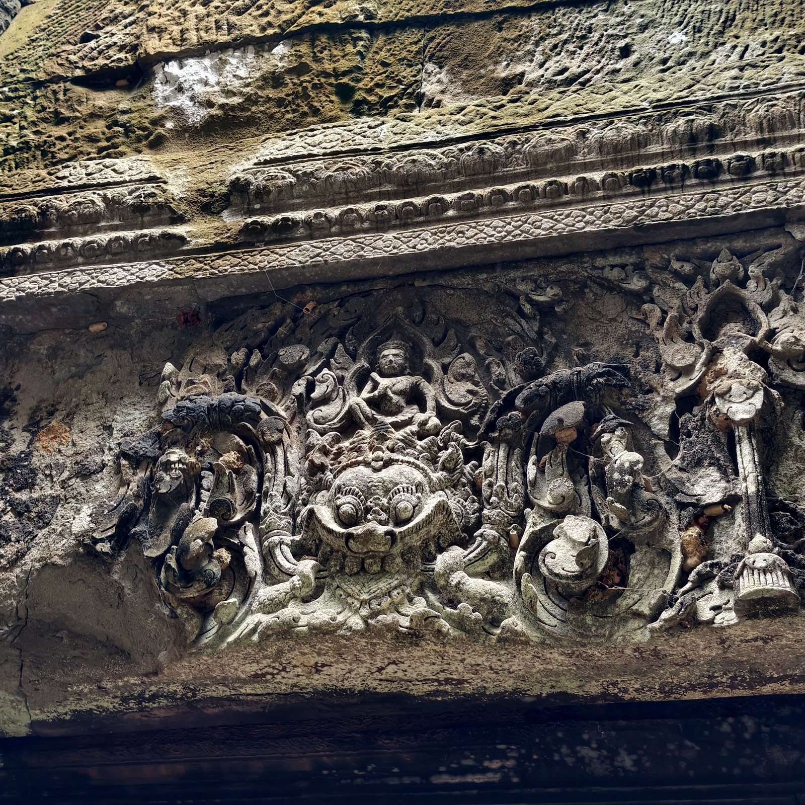
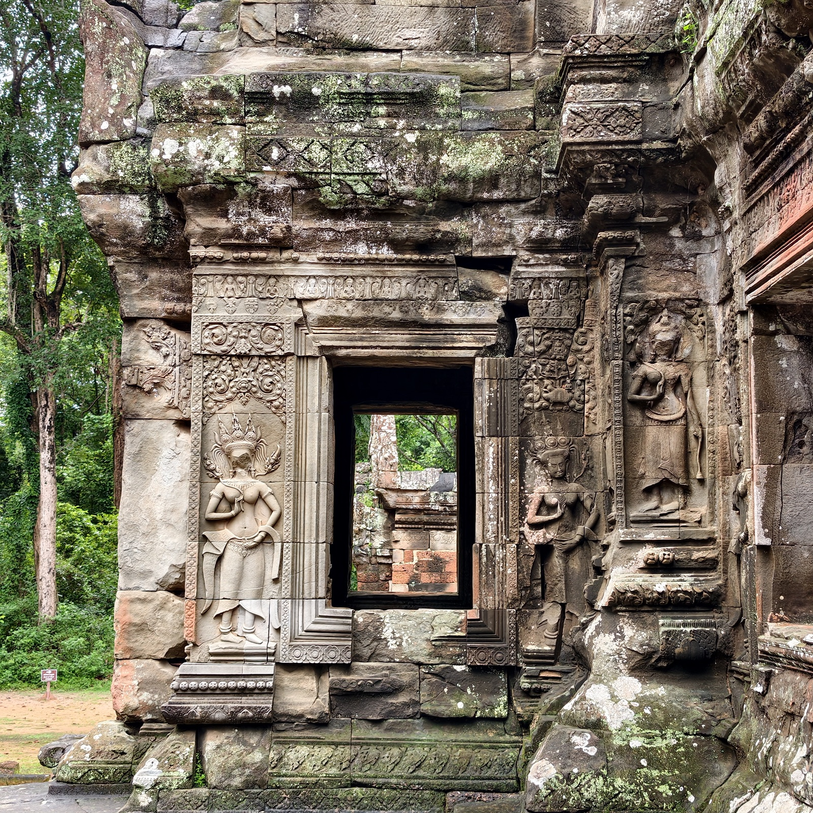
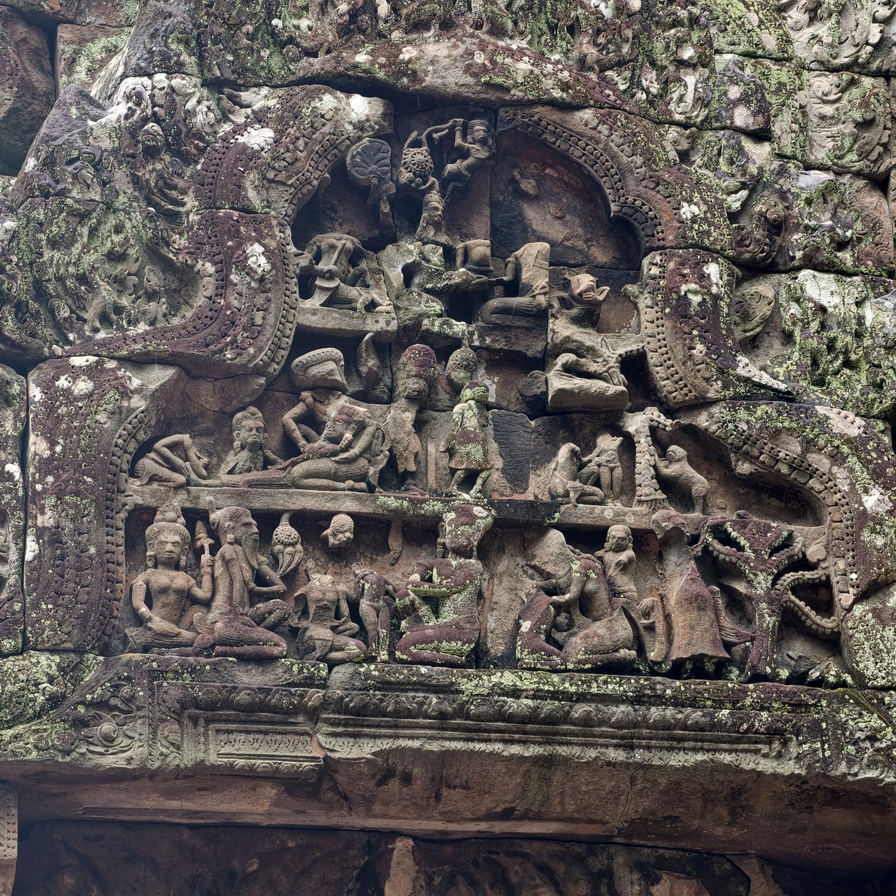
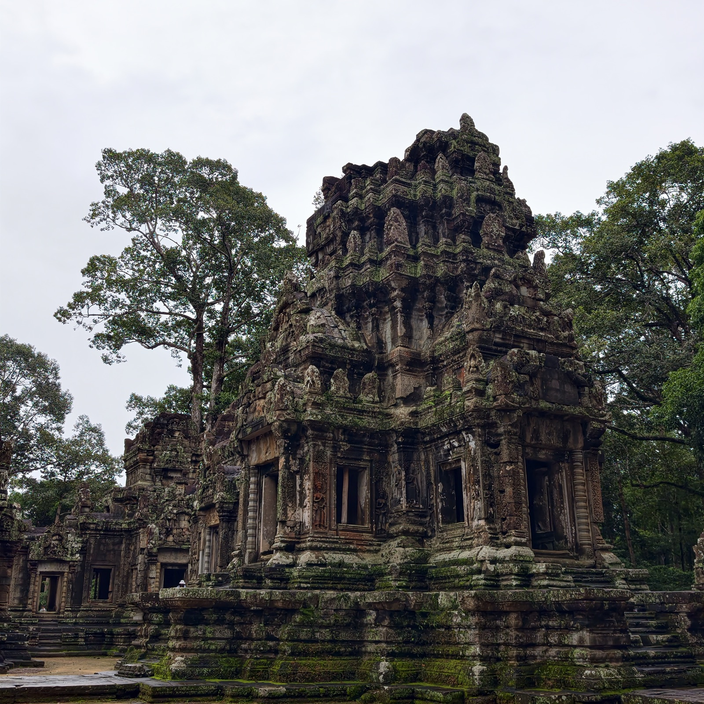
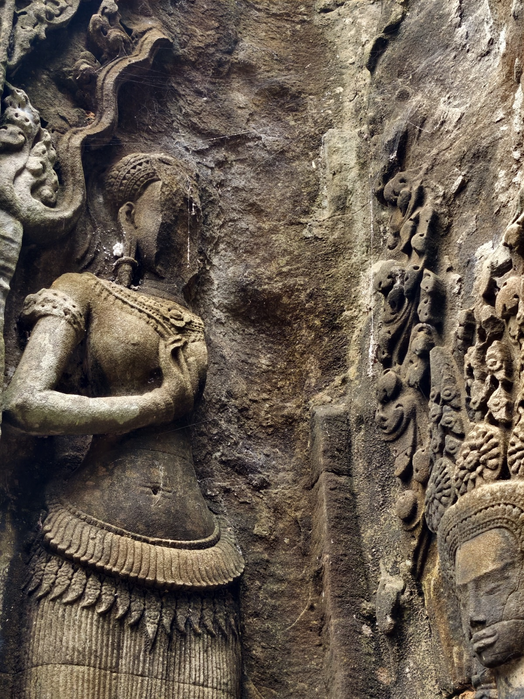
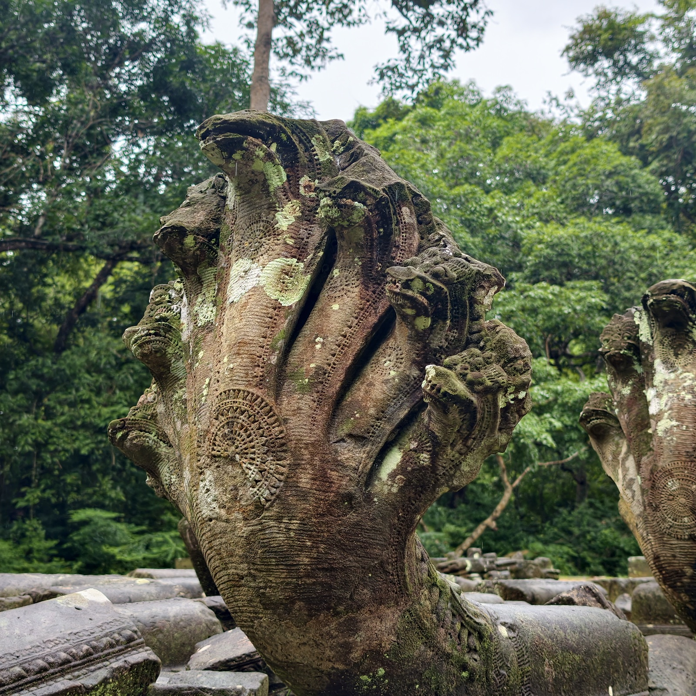

塔玛农庙
来到这座庙的时候，有个本地人用柬语问我们的向导陈老师：这是什么地方？陈老师告诉了他。她说，这是塔玛农庙，如今很多当地人都不知道它了——她希望柬埔寨的年轻人还是要学一学自己的历史。

塔玛农庙建于十二世纪上半叶，是苏耶跋摩二世——也就是造吴哥寺的那位国王——年间的作品，因此处处是地道的吴哥寺风格。它立在通王城胜利门外的皇家大道旁，与路对面的周萨神庙是一对同时、同式的「双子庙」，共同守着都城的东门。庙里供奉湿婆与毗湿奴，门楣与三角楣上刻的多是印度教神话，尤其常见《罗摩衍那》的场景。六十年代法国人用「原物归位」的法子修过它：把散落的原石一块块拼回原处，几乎不添新料，所以今天看到的石头大多还是八百年前的那批。

卡拉的神情狰狞，来历却有点悲壮。传说它是湿婆造出的怪物，胃口大得没有边，湿婆罚它吃自己的身体——它便从尾巴吃起，一路吃到只剩一颗头颅和上颚。湿婆嘉许它的忠诚，命它从此镇守门户。所以吴哥的门楣上处处能见到这张脸：卡拉在上，下半身为马卡拉（摩羯）所接，象征时间的吞噬。坐在卡拉头顶的，通常是另一位主神——狰狞者在下驮负，庄严者在上安坐。




